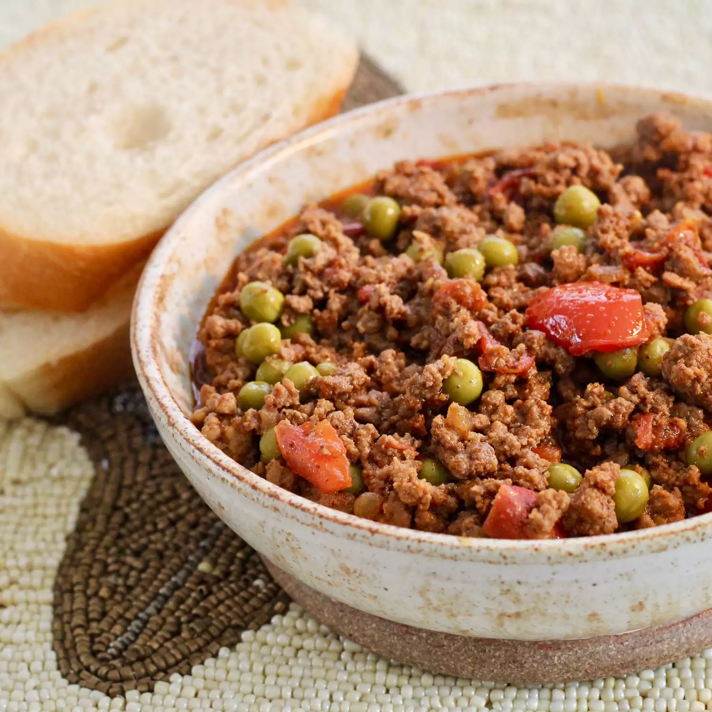

Aloo Mater

Description
Not only is this a comfort food for anyone who grew up in a Pakistani household
but it is also a remarkably simple dish to make! Taking just one hour to cook,
this recipe is sure to please the entire family.
Please note that using fresh spices and vegetables makes all the difference
for this dish (and really, every dish!). Serve with a side of basmati rice or
parathas.
Ingredients
- 6 tablespoons olive oil
- 1 small onion, diced
- 1 pound ground beef
- 2 medium tomatoes, chopped
- 1 tablespoon curry powder
- 1 teaspoon paprika
- 1 teaspoon salt
- 3/4 teaspoon black pepper
- 1/2 teaspoon chile powder
- 1/4 teaspoon cayenne pepper
- 1 (8.5 ounce) can peas, including liquid (Optional)
Directions
- Heat olive oil in a saucepan over medium heat. Add onion; cook and stir until browned, 5 to 8 minutes. Add beef and tomatoes. Cook, uncovered, until tomatoes break down, about 15 minutes.
- Add curry powder, paprika, salt, pepper, chile powder, and cayenne. Cover and simmer until flavors combine, about 30 minutes. Uncover and stir in peas with liquid. Cook until heated through, 3 to 5 minutes.
Cook's Note
If omitting peas, you may want to add 1/2 cup water.
Home